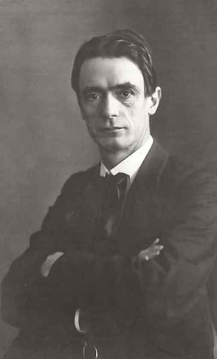

La antroposofía es un sistema de pensamiento fundado a principios del siglo XX por Rudolf Steiner.
Origen y Fundador:
Rudolf Steiner, filósofo, científico e investigador de las obras de Goethe, desarrolló la antroposofía
como una ciencia espiritual. La antroposofía busca comprender un mundo espiritual objetivo,
intelectualmente comprensible y accesible a la experiencia humana.
Autoconocimiento y Espiritualidad:
Steiner describía la antroposofía como un "sendero de autoconocimiento que quisiera conducir lo
espiritual en el hombre a lo espiritual en el universo". La antroposofía ofrece un enfoque para
integrar la ciencia, el arte y la religión en una visión más amplia de la existencia humana.
Objetivo y Práctica:
Los seguidores de la antroposofía buscan participar en el descubrimiento espiritual a través de un
modo de pensamiento independiente de la experiencia sensorial. Intentan presentar sus ideas de manera
verificable mediante el discurso racional y buscan precisión y claridad al estudiar el mundo
espiritual, similar a la búsqueda científica en el mundo físico.
En resumen, la antroposofía es un camino hacia el autoconocimiento y la comprensión espiritual, y Rudolf Steiner desempeñó un papel fundamental en su desarrollo.
